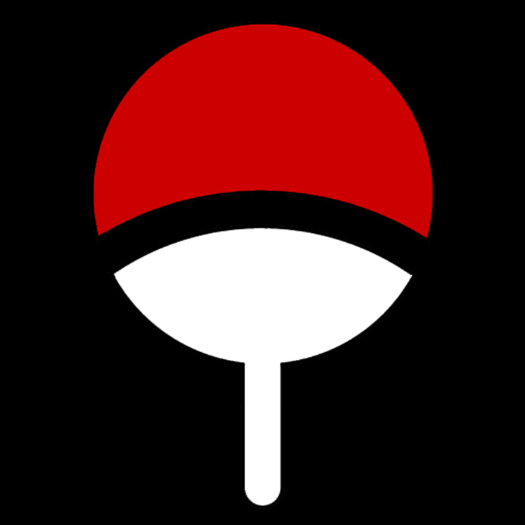
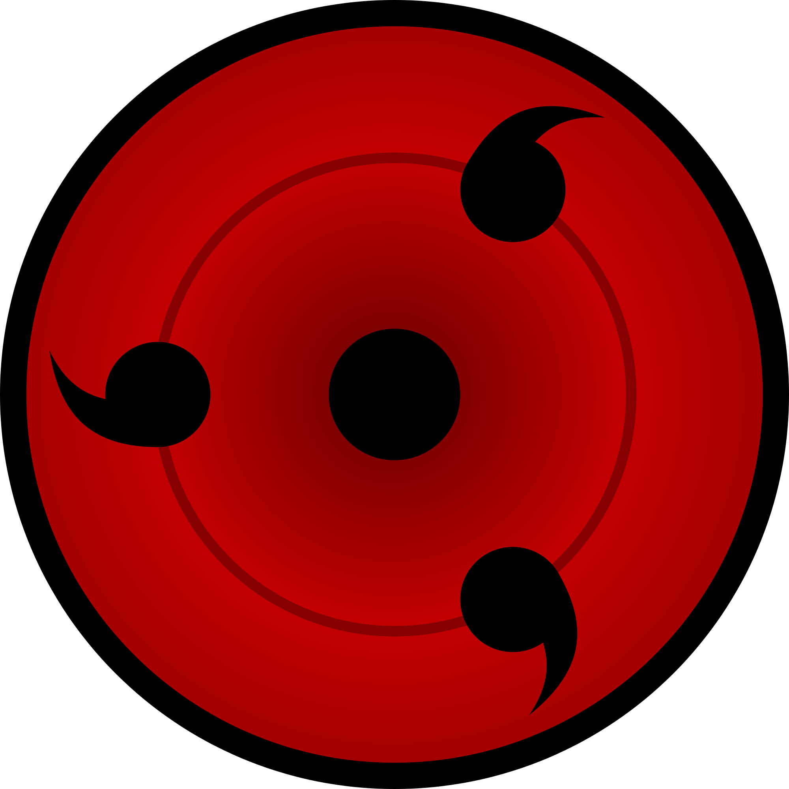

Random Facts about the Uchiha Clan!


- The village is part of the four clans that are in the Hidden Leaf Village
- They have special eyes called the Sharingan that give them special powers unique to each person in the clan
- The Sharingan can evolve to the Mangekyou Sharingan when the person experiences intense trauma
- The whole clan was killed by one of its own but the killer didn't kill his own brother
- The name Uchiha is an alternative way to say "paper fan" this relates to their clan's symbol
- The clan's skills were based on Shinto Deities in a Japanese creation myth
- The eyes that the Uchiha's have, has the power to control reality for a limited amount of time if they're willing to lose an eye